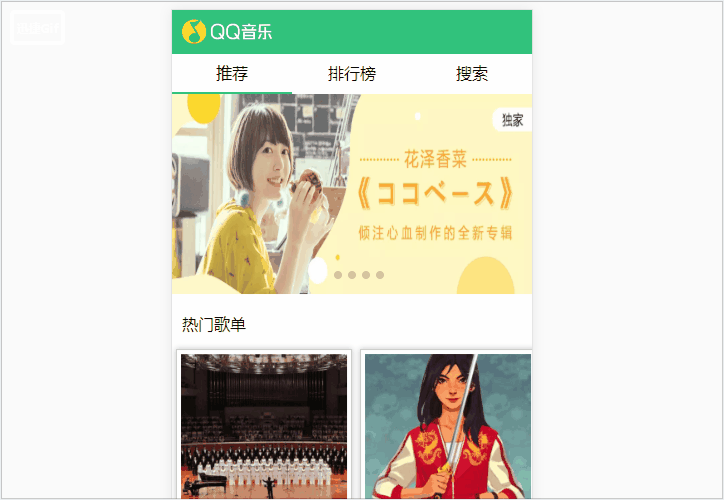
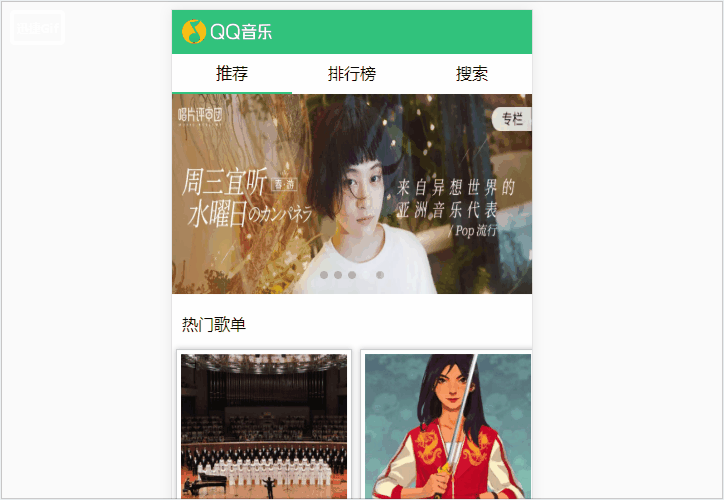

最近用vue写一个模仿qq音乐的单页面应用，
因为看到黄轶老师的例子是浏览器刷新会路由会重新定向到首页的，
所以就想应该是跟路由有关系的。
而且我注意到一个细节。就是我在其他的页面刷新的时候，它会先短暂显示首页，再跳到刷新之前的页面，
所以是不是可以理解为项目刷新会先经过首页，再到刷新之前的页面。
所以，我就在我的App.vue。写了下面的代码
created(){
if(this.$router.path !== '/recommend'){
this.$router.replace('/recommend')
}
}注意这里的recommend是我项目重定向的首页，判断是不是首页，如果不是就用路由的方法replace，代替的意思。
换到首页。
这里给大家看一下，没做之前的效果。

改完之后的效果：

好了，写一个博文记录一下自己的小聪明，希望看到这个博文的你，有所启发。